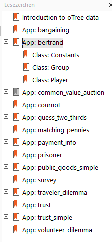
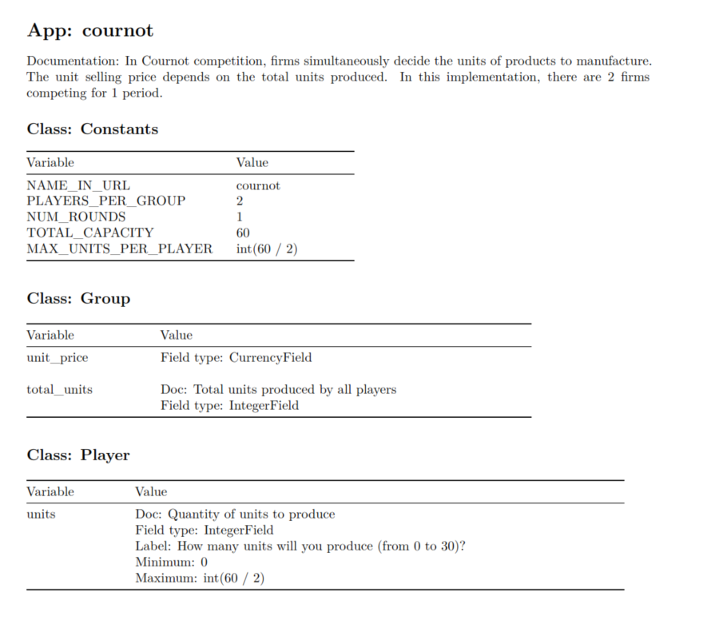

gmoTree Codebooks
Patricia F. Zauchner
2023-09-21 (updated: 2024-12-06)
Source:vignettes/codebook.Rmd
codebook.RmdOverview
The gmoTree package provides tools for generating
codebooks based on data from the
oTree (Chen et al.,
2016) framework with the function codebook(). This vignette
introduces its key features and functionalities.
Disclaimer: This code has been tested with both custom implementations and official oTree sample codes.1 However, due to the complexity of oTree setups, it may not address all variations. Please review your output carefully, and feel free to open a GitHub issue if you encounter any problems.
Running the code
In its simplest form, the function requires only the path to your
oTree code. The following code reads the contents of your oTree file,
saves a file containing your codebook in your working directory, and
returns a list named cbook, containing the extracted
information.
cbook <- codebook("D:/pathtoyourproject/oTree_codes")Codebook structure and output
The output is structured with clear headings:
- Heading Level 1: Represents each app in the oTree data.
- Heading Level 2:
GroupandPlayervariables, categorized within each app. Showing the classConstantsis optional and can be turned off by using the argumentinclude_cons = FALSE.

The example below shows the output for the cournot app,
which includes all Constants, Group, and
Player variables. If a class contains no information, the
heading will still appear, along with the message “Empty class.”

Use output = "list" to bypass file creation. This option
returns all the information in list format, which can then be used in R
Markdown to design a custom codebook. Below is an example of how such a
list output looks like. (The argument doc_info = FALSE
suppresses messages about missing variable documentation.)
# Create the codebook list
cbook <- codebook(path = system.file(path = "extdata/ocode_new",
package = "gmoTree"),
output = "list",
doc_info = FALSE)
str(cbook, 1) # Show all apps ## List of 16
## $ settings :List of 10
## $ bargaining :List of 4
## $ bertrand :List of 4
## $ common_value_auction:List of 4
## $ cournot :List of 4
## $ dictator :List of 4
## $ guess_two_thirds :List of 4
## $ matching_pennies :List of 4
## $ payment_info :List of 4
## $ prisoner :List of 4
## $ public_goods_simple :List of 3
## $ survey :List of 3
## $ traveler_dilemma :List of 4
## $ trust :List of 3
## $ trust_simple :List of 3
## $ volunteer_dilemma :List of 4
print(cbook$cournot) # Only show cournot app## $doc
## [1] "In Cournot competition, firms simultaneously decide the units of products to manufacture. The unit selling price depends on the total units produced. In this implementation, there are 2 firms competing for 1 period."
##
## $Constants
## $Constants$NAME_IN_URL
## [1] "cournot"
##
## $Constants$PLAYERS_PER_GROUP
## [1] 2
##
## $Constants$NUM_ROUNDS
## [1] 1
##
## $Constants$TOTAL_CAPACITY
## [1] 60
##
## $Constants$MAX_UNITS_PER_PLAYER
## [1] "int(60 / 2)"
##
##
## $Group
## $Group$unit_price
## $Group$unit_price$noargs
## [1] TRUE
##
## $Group$unit_price$field
## [1] "CurrencyField"
##
##
## $Group$total_units
## $Group$total_units$noargs
## [1] FALSE
##
## $Group$total_units$doc
## [1] "Total units produced by all players"
##
## $Group$total_units$field
## [1] "IntegerField"
##
##
##
## $Player
## $Player$units
## $Player$units$noargs
## [1] "FALSE"
##
## $Player$units$min
## [1] "0"
##
## $Player$units$max
## [1] "int(60 / 2)"
##
## $Player$units$doc
## [1] "Quantity of units to produce"
##
## $Player$units$label
## [1] "How many units will you produce (from 0 to 30)?"
##
## $Player$units$field
## [1] "IntegerField"Choosing what to show
Apps
Per default, all apps are included in the codebook. To generate a
codebook for only one app, use the app argument. For
example, to generate a codebook for the cournot app:
cbook <- codebook(
path = system.file("extdata/ocode_new",
package = "gmoTree"),
fsource = "init",
output = "list",
doc_info = FALSE,
app = "cournot")
str(cbook)## List of 2
## $ settings:List of 10
## ..$ variable : num 66
## ..$ PARTICIPANT_FIELDS : list()
## ..$ SESSION_FIELDS : list()
## ..$ LANGUAGE_CODE : chr "en"
## ..$ REAL_WORLD_CURRENCY_CODE: chr "USD"
## ..$ USE_POINTS : chr "True"
## ..$ ADMIN_USERNAME : chr "admin"
## ..$ ADMIN_PASSWORD : chr "environ.get('OTREE_ADMIN_PASSWORD')"
## ..$ DEMO_PAGE_INTRO_HTML : chr "Here are some oTree games."
## ..$ SECRET_KEY : chr "9356668094877"
## $ cournot :List of 4
## ..$ doc : chr "In Cournot competition, firms simultaneously decide the units of products to manufacture. The unit selling pric"| __truncated__
## ..$ Constants:List of 5
## .. ..$ NAME_IN_URL : chr "cournot"
## .. ..$ PLAYERS_PER_GROUP : num 2
## .. ..$ NUM_ROUNDS : num 1
## .. ..$ TOTAL_CAPACITY : num 60
## .. ..$ MAX_UNITS_PER_PLAYER: chr "int(60 / 2)"
## ..$ Group :List of 2
## .. ..$ unit_price :List of 2
## .. .. ..$ noargs: logi TRUE
## .. .. ..$ field : chr "CurrencyField"
## .. ..$ total_units:List of 3
## .. .. ..$ noargs: logi FALSE
## .. .. ..$ doc : chr "Total units produced by all players"
## .. .. ..$ field : chr "IntegerField"
## ..$ Player :List of 1
## .. ..$ units:List of 6
## .. .. ..$ noargs: chr "FALSE"
## .. .. ..$ min : chr "0"
## .. .. ..$ max : chr "int(60 / 2)"
## .. .. ..$ doc : chr "Quantity of units to produce"
## .. .. ..$ label : chr "How many units will you produce (from 0 to 30)?"
## .. .. ..$ field : chr "IntegerField"The code above returns a list with the app-specific information. You
can also generate codebooks for multiple apps by specifying them in the
app argument.
cbook <- codebook(
path = system.file("extdata/ocode_new",
package = "gmoTree"),
fsource = "init",
output = "list",
doc_info = FALSE,
app = c("cournot", "dictator"))
str(cbook, 1)## List of 3
## $ settings:List of 10
## $ cournot :List of 4
## $ dictator:List of 4You can also choose all but remove one or more apps. Here is an
example that removes the app prisoner:
cbook <- codebook(
path = system.file("extdata/ocode_new", package = "gmoTree"),
fsource = "init",
output = "list",
doc_info = FALSE,
app_rm = "prisoner")
str(cbook, 1)## List of 15
## $ settings :List of 10
## $ bargaining :List of 4
## $ bertrand :List of 4
## $ common_value_auction:List of 4
## $ cournot :List of 4
## $ dictator :List of 4
## $ guess_two_thirds :List of 4
## $ matching_pennies :List of 4
## $ payment_info :List of 4
## $ public_goods_simple :List of 3
## $ survey :List of 3
## $ traveler_dilemma :List of 4
## $ trust :List of 3
## $ trust_simple :List of 3
## $ volunteer_dilemma :List of 4Customizing how the codebook is shown
Customizing the codebook titles and metadata
You can easily modify the titles, subtitles, dates, and author names in your codebooks using the following arguments:
codebook(
path = "YouroTreePath", # Can be either absolute or relative!
title = "Codebook",
subtitle = "Example Project",
date = "today",
params = list(author = c("Max Mustermann", "John Doe"))
)Sorting the code
You can sort the apps in the codebook by specifying the
sort argument. For example:
cbook <- codebook(
path = system.file("extdata/ocode_new", package = "gmoTree"),
fsource = "init",
output = "list",
doc_info = FALSE,
app = c("cournot", "dictator"),
sort = c("dictator", "cournot"))
str(cbook, 1)## List of 3
## $ settings:List of 10
## $ dictator:List of 4
## $ cournot :List of 4Referring to settings
The gmoTree package can automatically replace references
to variables in settings.py with the values in the
settings.py file. To enable this, set
settings_replace = "global".
cbook <- codebook(
path = system.file("extdata/ocode_new", package = "gmoTree"),
fsource = "init",
output = "list",
settings_replace = "global",
app = "dictator")## Variables without documentation, label, or verbose name:
## > $dictator$Player$gender
print(cbook$dictator$Constants$Variable)## [1] 66You can also choose to not replace the references to settings
variables by using settings_replace = NULL.
cbook <- codebook(
path = system.file("extdata/ocode_new", package = "gmoTree"),
fsource = "init",
output = "list",
settings_replace = NULL,
app = "dictator")## Variables without documentation, label, or verbose name:
## > $dictator$Player$gender
print(cbook$dictator$Constants$Variable)## [1] "settings.variable"It is also possible to provide a list of variables to replace the
settings variables with the argument user_settings. For
example:
cbook <- codebook(
path = system.file("extdata/ocode_new", package = "gmoTree"),
fsource = "init",
output = "list",
settings_replace = "user",
user_settings = list(variable = "someValue"),
app = "dictator")## Variables without documentation, label, or verbose name:
## > $dictator$Player$gender
print(cbook$dictator$Constants$Variable)## [1] "someValue"Saving your codebook
When you choose output = "file" or
output = "both", your codebook will be saved as a
professional document ready for publication or sharing.
Output formats
The argument output_format allows you to choose the
format of the exported codebook file. Available formats are:
html_documentword_documentlatex_documentodt_documentrtf_documentmd_documentpdf_documentpdf_document_simple
You can choose the format that best suits your needs, with all formats except PDF allowing easy post-generation editing.
When knitting to PDF, make sure to have LaTex installed! It is
recommended to use output_format = pdf_document_simple.
However, many non-Latin characters (e.g., Chinese characters) may not
work with this format. In such cases, you can choose
output_format = pdf_document, which is set to use
xelatex.
Please note that using xelatex with gmoTree has some
limitations: for example, gmoTree currently cannot handle
long variable values that result in excessively long table cells. This
can cause the PDF to display improperly in certain viewers, such as
Nitro. To address this, carefully review your file. If necessary,
consider using output_format = latex_document.
Alternatively, open the file with a PDF viewer that can handle these
cases, then save it there to ensure it displays correctly in other PDF
viewers.
Output files
By default, gmoTree codebooks are saved in your working
directory with the default file name codebook. You can
modify this by specifying a custom file name and directory path.
For example, to save the codebook with a different name, use the following code:
codebook(
path = "C:/Users/username/folder/oTree", # Replace!
output_file = "gmoTree_codebook")You can also include the file extension, although it is optional:
codebook(
path = "C:/Users/username/folder/oTree", # Replace!
output_file = "gmoTree_codebook.pdf")You can save the file in a subfolder within the current directory by
including the absolute or relative folder name in the
output_file argument. For example:
codebook(
path = "C:/Users/username/folder/oTree", # Replace!
output_file = "codebookfiles/gmoTree_codebook.pdf")You can also specify absolute paths, either in the
output_dir argument or directly within the file name
specified in the output_file. For example:
codebook(
path = "C:/Users/username/folder/oTree", # Replace!
output_dir = "C:/Users/username/folder/codebooks",
output_file = "mycodebook")Summary
This vignette documents how to customize the codebook generated by
the codebook() function, including options for content
selection, formatting, and exporting to various formats. These tools
enable the creation of comprehensive and tailored documentation for your
experimental data.
References
Chen, D. L., Schonger, M., & Wickens, C. (2016). oTree—An open-source platform for laboratory, online, and field experiments. Journal of Behavioral and Experimental Finance, 9, 88–97. https://doi.org/10.1016/j.jbef.2015.12.001